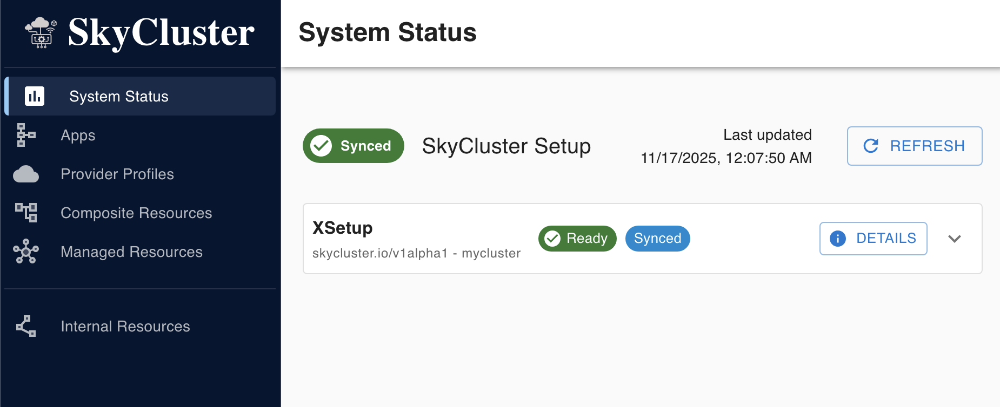

Installation#
Quick jump links:
Pre-requisites#
SkyCluster Operator runs as a Kubernetes operator and requires a
Kubernetes cluster to run on. You can use any Kubernetes cluster,
including a local cluster created using kind. In addition to the Kubernetes cluster, you need to have the Kubectl and Helm installed on your machine.
SkyCluster acts as a broker between different cloud providers, and hence it requires a public IP address to be reachable from the internet. You can simply use your machine’s public IP address if it is directly connected to the internet. If your machine is behind a NAT or firewall, you need to set up port forwarding to forward the required ports to your machine.
If you are using a cloud VM, make sure the VM has at least 8vCPUs and 16GB of RAM to run the local cluster and SkyCluster components smoothly. Larger resources are recommended for production workloads and cloud provider environments.
You need to open the following ports on your firewall to allow communication cross-domain:
4500/UDP: Required for inter-cluster communication
41641/UDP: Required for overlay setup (tailscale)
8000/TCP: Required for SkyCluster dashboard
8080/TCP: Required for overlay setup (headscale)
3000/TCP: Required for Grafana dashboard (optional)
9090/TCP: Required for Prometheus monitoring (optional)
6443/TCP: Required for Kubernetes API server (optional)
If you intend to use kubectl or other local tools to interface with GKE service offered by
GCP you need to ensure gcloud is installed (installation guide).
Create a Local Cluster#
A local cluster is required to run the skycluster-operator and act as the point of
contact for submitting your application. You can create a local management Kubernetes cluster using kind with the following command for testing purposes. If your machine has a public IP address you can bound the cluster to it by using the --advertise-address flag. If you plan to use the cluster for production purposes, you should consider using a more robust solution such as kubeadm or Rancher.
kind create cluster --name skycluster --config skycluster-kind.yaml
and the skycluster-kind.yaml file should contain the following content:
1kind: Cluster
2apiVersion: kind.x-k8s.io/v1alpha4
3networking:
4 podSubnet: 10.0.0.0/19
5 serviceSubnet: 10.0.32.0/19
6 apiServerAddress: 0.0.0.0
7 apiServerPort: 6443
8kubeadmConfigPatches:
9 - |
10 kind: ClusterConfiguration
11 apiServer:
12 certSANs:
13 - 127.0.0.1
14 - 0.0.0.0
15 - skycluster.local
16 - a.b.c.d # Replace with your cluster internal IP
17 - e.f.g.h # Replace with your cluster public IP
18nodes:
19 - role: control-plane
20 extraPortMappings:
21 # Required for inter-cluster communication
22 - containerPort: 4500
23 hostPort: 4500
24 protocol: UDP
25 # Required for overlay setup
26 - containerPort: 30080
27 hostPort: 8080
28 protocol: TCP
The cluster is used used to act as a broker between other gateways across different cloud providers, and hence it requires a public IP address to be reachable from the internet. Once installed replace the 0.0.0.0 with the actual public IP address of your machine in the ~/.kube/config file:
sed -i "s/0\.0\.0\.0/$(curl -s ifconfig.io)/g" ~/.kube/config
At least one node in your cluster should be labeled as a gateway node. You can label the control plane node as follows:
kubectl label node skycluster-control-plane \
skycluster.io/node-type=gateway \
submariner.io/gateway=true
Warning
Ensure that a node is labeled as a gateway node and that you can access the cluster using the public IP address before proceeding to the next step.
Install Crossplane#
To manage the underlying cloud resources, you need to install Crossplane in your cluster. You can do this using the following command:
helm repo add crossplane-stable https://charts.crossplane.io/stable
helm repo update
helm install crossplane \
--namespace crossplane-system \
--create-namespace crossplane-stable/crossplane \
--version 1.20.0
Note
Ensure that Crossplane is installed successfully and all pods are running before proceeding to the next step.
kubectl get pods -n crossplane-system
Install SkyCluster#
SkyCluster Main Chart#
SkyCluster Manager supports AWS, GCP and Azure as well as on-premises infrastructure powered by OpenStack.
Install the skycluster using helm chart as follows. All settings are deployed to the fixed namespac skycluster-system.
helm repo add skycluster https://skycluster.io/charts
helm repo update
helm install skycluster skycluster/skycluster
Note
The installation may take a few minutes to complete depending on your internet connection. You should wait till all providers listed below are installed and healthy before proceeding to the next step.
kubectl get providers.pkg
Ensure that all pods have INSTALLED and HEALTHY states equal to True.
Once you have all providers listed above all ready, you can proceed to the next step:
SkyCluster CRDs#
Warning
WIP: The following charts are not yet available for installation.
helm install skycluster-crds skycluster/skycluster
SkyCluster CLI#
Using skycluster tool you can call skycluster related APIs. SkyCluster cli is required to setup and interact with SkyCluster resources from your local machine.
To install SkyCluster cli tool, download the latest pre-built binary from the releases page and put it in your PATH.
curl -LO https://github.com/skycluster-project/skycluster-cli/releases/download/v0.1.2/skycluster-cli-v0.1.2-alpha.1-linux-amd64.tar.gz
tar -xvf skycluster-cli-v0.1.2-alpha.1-linux-amd64.tar.gz
sudo mv skycluster /usr/local/bin/skycluster
Configuration#
Create a configuration file in your home directory named .skycluster. The configuration file should look like this:
# Write the full path to your kubeconfig file
kubeconfig: /home/ubuntu/.kube/config
When you have installed the CLI tool and created the configuration file, you can use the skycluster command to interact with SkyCluster resources. First, launch the following command to setup the initial configuration:
export PUBLIC_KEY=~/.ssh/id_rsa.pub
export PRIVATE_KEY=~/.ssh/id_rsa
export API_SERVER=$(curl -s ifconfig.io)
skycluster setup \
--apiserver ${API_SERVER}:6443 \
--public ${PUBLIC_KEY} \
--private ${PRIVATE_KEY}
Check the status of the SkyCluster operator:
kubectl get xsetup.skycluster.io
# NAME SYNCED READY COMPOSITION AGE
# skycluster-mgmt True True xsetups.skycluster.io 21h
You can also check the status of the SkyCluster components within the dashboard:
{kind=link}

Once ready, you can follow the examples in the SkyCluster documentation to deploy applications.